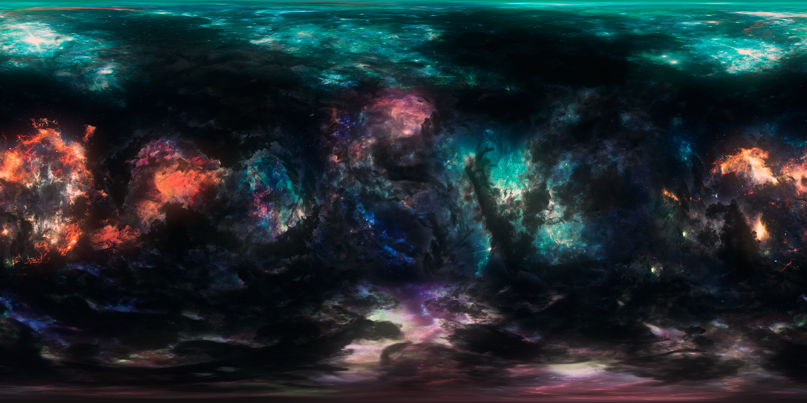
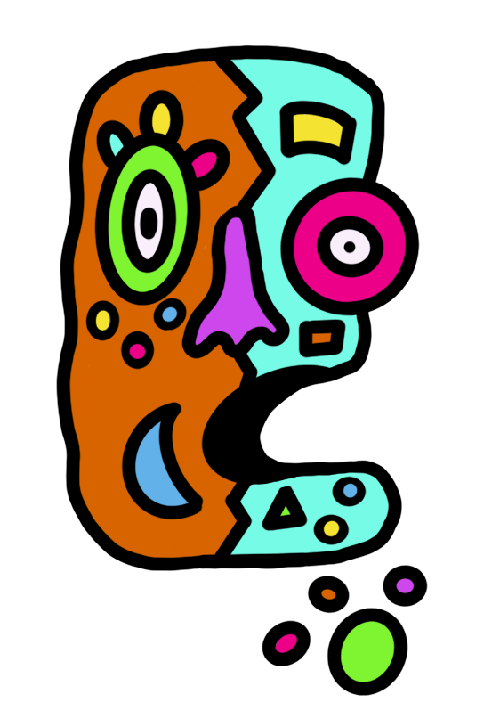
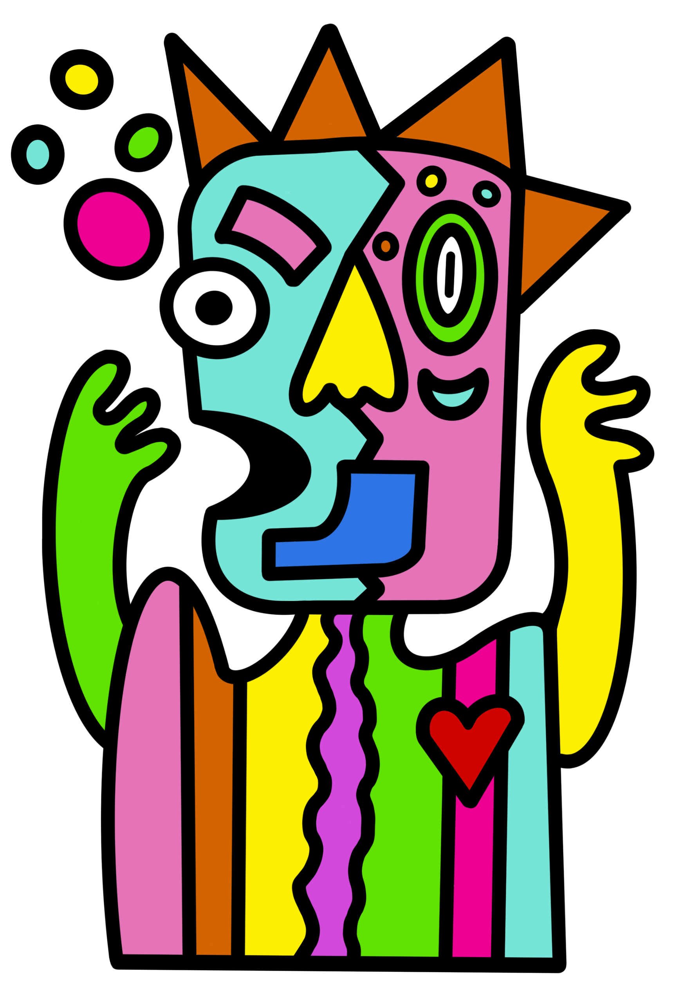
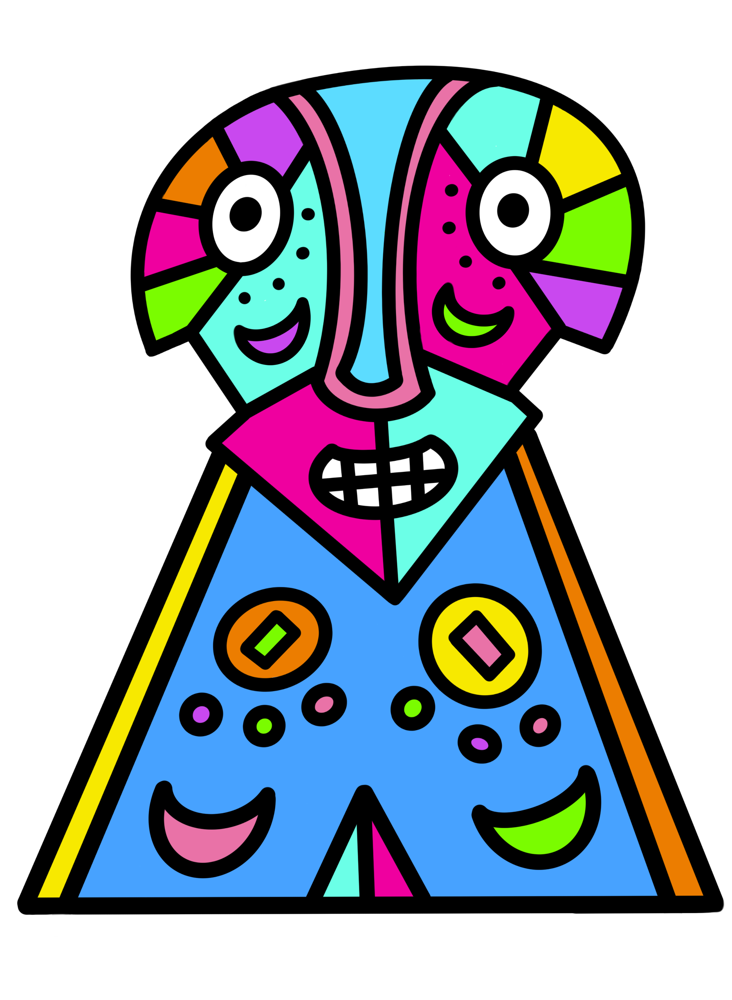
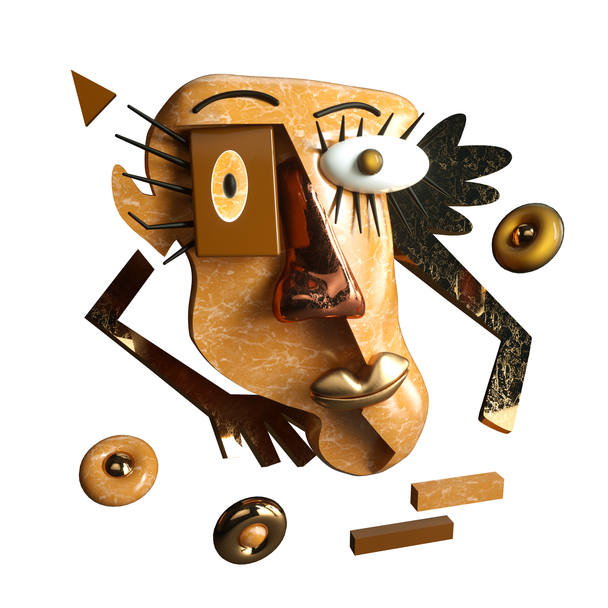

A gallery you ride through
Everything springs from a thought. A flash, a spark, an impulse that gives rise to the innovative makes its way inside.
The Creator of Thoughts
Four worlds, fifteen pieces, each sealed in an egg. They open in order. Follow the compass, and take the portal it names when a world has no more to show.
WASD ride · drag to look · Space boost · Shift jump, hold to fly · C collection
Transcendence
WORLD 01
C collection
Nearest piece00 / 15 seen
WASD ride · drag to look · Space boost · Shift jump, hold to fly · C collection
00 / 15 opened
All fifteen eggs opened
Time will bring a smile.
Sadness of the Good One